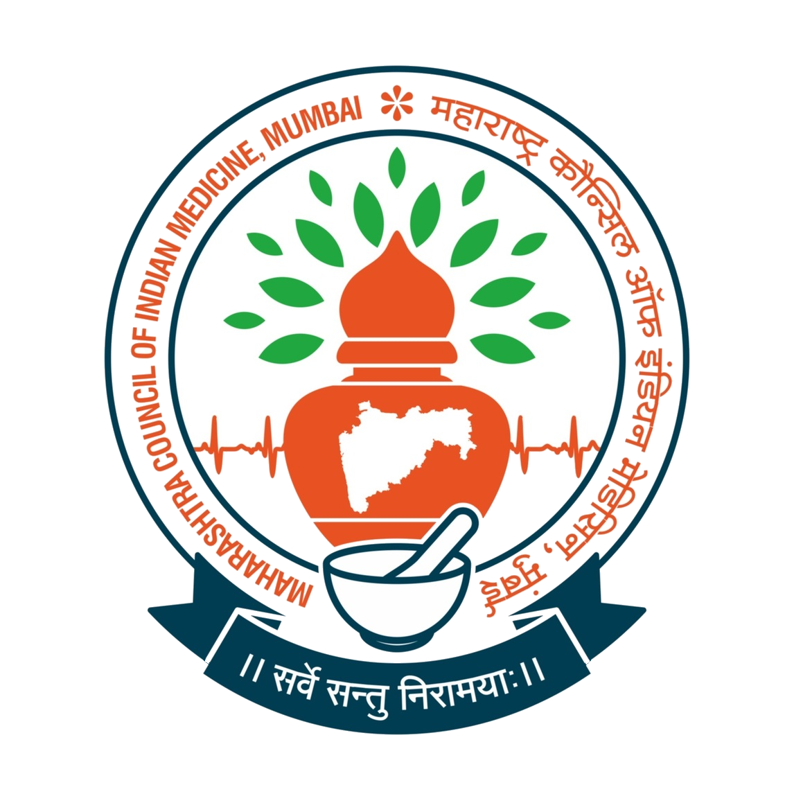

Ayurveda & Unani | mcimindia.co.in
A+
A-
Site-Map
Skip to Main

M.C.I.M.
Home
About Us
Doctor's Login
College Login
New Login
Contact Us
Find Doctor
Home
Find Doctor
Select Search Type
-- Select --
Find by Doctor's Name
Find by Registration No (Only Number)
Find by Location
Enter search value
Result of Calculation
=
Search Results
No results found. Please try with different search criteria.
Sr.
Registration No
Registration Date
Doctor's Name
Gender
Qualification
MCIM Status
Location
Showing 1 to 1 of 1 entries